산업위생관리산업기사 (2014-08-17 기출문제)
1과목: 산업위생학 개론
1. 산업안전보건법령상에 명시된 근로자 건강관리를 위한 건강진단의 종류에 해당되지 않는 것은 무엇인가?
- 배치전건강진단
- 수시건강진단
- 종합건강진단
- 임시건강진단
(정답률: 69%)

2. 스트레스(stress)는 외부의 스트레서(st- ressor)에 의해 신체에 항상성이 파괴되면서 나타나는 반응이다. 다음 설명 중 A에 해당하는 것은 무엇인가?
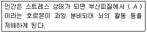
- 도파민(dopamine)
- 코티졸(cortisol)
- 옥시토신(oxytocin)
- 아드레날린(adrenalin)
(정답률: 80%)
3. methyl chloroform(TLV = 350ppm)을 1일 12시간 작업할 때 노출기준을 Brife & Scala 방법으로 보정하면 몇 ppm 으로 하여야 하는가?
- 150
- 175
- 200
- 250
(정답률: 81%)
4. 다음 중 혐기성 대사에서 혐기성 반응에 의해 에너지를 생산하지 않는 것은 무엇인가?
- 지방
- 포도당
- 크레아틴인산(CP)
- 지방아데노신삼인산(ATP)
(정답률: 84%)
5. 다음 중 NIOSH에서 권장하는 중량물 취급 작업시 감시기준(Action Limit)이 20 kg일 때 최대허용기준(MPL)은 몇 kg인가?
- 25
- 30
- 40
- 60
(정답률: 90%)
6. 작업대사율(RMR)이 4인 작업을 하는 근로자의 실동률은 얼마인가? (단, 사이또와 오시마 식을 적용한다.)
- 55%
- 65%
- 75%
- 85%
(정답률: 83%)
7. 다음 중 산업피로의 증상으로 옳은 것은 무엇인가?
- 체온조절의 장애가 나타나며, 에너지소모량이 증가한다.
- 호흡이 얕고 빨라지며, 근육 내 글리코겐이 증가하게 된다.
- 혈액 중의 젖산과 탄산량이 감소하여 산혈증을 일으킨다.
- 소변의 양과 뇨내 단백질이나 기타 교질 영양물질의 배설량이 줄어든다.
(정답률: 60%)
8. 다음 중 재해의 지표로 이용되는 지수의 산식이 바르지 않은 것은?
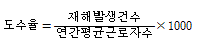
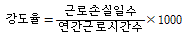
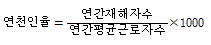
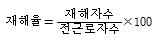
(정답률: 87%)
9. 다음 중 중량물 취급에 있어서 미국 NOISH에서 중량물 최대허용한계(MPL)를 설정할 때의 기준으로 바르지 않은 것은?
- MPL에 해당하는 작업은 L5/S1디스크에 6400N의 압력을 부하
- MPL에 해당하는 작업이 요구하는 에너지대사량은 5.0kcal/min을 초과
- MPL을 초과하는 작업에서는 대부분의 근로자들에게 근육ㆍ골격 장애가 발생
- 남성 근로자의 50% 미만과 여성 근로자의 10% 미만에서만 MPL 수준의 작업수행이 가능
(정답률: 80%)
10. 다음 중 산업위생의 정의에서 제시되는 주요 활동 4가지를 올바르게 나열한 것은 무엇인가?
- 예측, 인지, 평가, 치료
- 예측, 인지, 평가, 관리
- 예측, 책임, 평가, 관리
- 예측, 평가, 책임, 치료
(정답률: 84%)
11. 1770년대 영국에서 굴뚝청소부로 일하던 10세 미만의 어린이에게서 음낭암을 발견하여 직업성 암을 최초로 보고한 사람은 누구인가?
- T.M Legge
- Gulen
- Goriga
- Percival pott
(정답률: 84%)
12. 다음 중 산업피로의 방지대책으로 가장 적절하지 않은 것은 무엇인가?
- 불필요한 동작을 피하고, 에너지 소모를 적게 한다.
- 작업시간 중 또는 작업 전ㆍ후에 간단한 체조 등의 시간을 갖는다.
- 너무 정적인 작업은 피로를 더하게 되므로 동적인 작업으로 전환한다.
- 일반적으로 단시간씩 여러 번 나누어 휴식하는 것보다 장시간 한번 휴식하는 것이 피로회복에 도움이 된다.
(정답률: 90%)
13. 산업안전보건법령에서 정하고 있는 신규화학물질의 유해성ㆍ위험성 조사에서 제외되는 화학물질이 아닌 것은 무엇인가?
- 원소
- 방사성물질
- 일반 소비자의 생활용이 아닌 인공적으로 합성된 화학물질
- 고용노동부장관이 환경부장관과 협의하여 고시하는 화학물질 목록에 기록되어 있는 물질
(정답률: 81%)
14. 산업위생전문가가 지켜야 할 윤리강령 중 “기업주와 고객에 대한 책임”에 관한 내용에 해당하는 것은 무엇인가?
- 신뢰를 중요시하고, 결과와 권고사항에 대하여 사전 협의토록 한다.
- 산업위생전문가의 첫 번째 책임은 근로자의 건강을 보호하는 것임을 인식한다.
- 건강에 유해한 요소들을 측정, 평가, 관리하는데 객관적인 태도를 유지한다.
- 건강의 유해요인에 대한 정보와 필요한 예방대첵에 대해 근로자들과 상담한다.
(정답률: 56%)
15. 다음 중 교대작업자의 작업설계를 할 때 고려해야 할 사항으로 적절하지 않은 것은 무엇인가?
- 야간작업은 연속하여 3일을 넘기지 않도록 한다.
- 근무반 교대방향은 아침반 → 저녁반 → 야간반으로 정방향 순환이 되게 한다.
- 교대작업자 특히 야간작업자는 주간작업자보다 연간 쉬는 날이 더 많이 있어야 한다.
- 야간반 근무를 모두 마친 후 아침반 근무에 들어가기 전 최소한 12시간 이상 휴식을 하도록 한다.
(정답률: 85%)
16. 작업환경측정 및 지정측정기관평가 등에 관한 고시에서 입자상 물질의 농도 평가에 있어 1일 작업시간이 8시간을 초과하는 경우 노출기준을 비교, 평가할 수 있는 보정 노출기준을 정하는 공식으로 옳은 것은 무엇인가? (단, T는 노출시간/일, H는 작업시간/주를 말한다.)
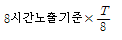
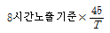
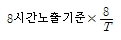
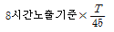
(정답률: 61%)
17. 다음 중 신체적 결함으로 간기능장애가 있는 작업자가 취업하고자 할 때 가장 적합하지 않은 작업은 무엇인가?
- 고소작업
- 유기용제취급작업
- 분진발생작업
- 고열발생작업
(정답률: 75%)
18. 다음 중 원인별로 분류한 직업성 질환과 직종이 잘못 연결된 것은 무엇인가?
- 비중격천공 : 도금
- 규폐증 : 채석, 채광
- 열사병 : 제강, 요업
- 무뇨증 : 잠수, 요업
(정답률: 69%)
19. 다음 중 전신진동을 일으키는 주파수 범위로 가장 적절한 것은 무엇인가?
- 1~80Hz
- 200~500Hz
- 1000~2000Hz
- 4000~8000Hz
(정답률: 78%)
20. 인간의 육체적 작업능력을 평가하는 데에는 산소소비량이 활용된다. 산소소비량 1L는 몇 kcal의 작업대사량으로 환산할 수 있는가?
- 1.5
- 3
- 5
- 8
(정답률: 69%)
2과목: 작업환경측정 및 평가
21. 0.5N-H2SO4(분자량 98) 1000mL를 만들 때 H2SO4의 필요량(g)은 얼마인가?
- 12.3g
- 16.5g
- 20.3g
- 24.5g
(정답률: 27%)
22. 어느 오염원에서 Perchloroethylene 40 %(TLV : 670mg/m3) Methylene chlo- ride 40% (TLV : 720mg/m3) 및 Hep- tane 20% (TLV : 1600mg/m3)증발되어 작업장을 오염시키고 있다. 이들 혼합물의 허용농도는 몇 mg/m3인가?(오류 신고가 접수된 문제입니다. 반드시 정답과 해설을 확인하시기 바랍니다.)
- 약 910mg/m3
- 약 850mg/m3
- 약 830mg/m3
- 약 780mg/m3
(정답률: 39%)
23. 어떤 분석방법의 검출한계가 0.15mg일 때 정량한계로 가장 적합한 것은 무엇인가?(오류 신고가 접수된 문제입니다. 반드시 정답과 해설을 확인하시기 바랍니다.)
- 0.30mg
- 0.45mg
- 0.90mg
- 1.5mg
(정답률: 71%)
24. 공기 흡입유량, 측정시간, 회수율 및 시료분석 등에 의한 오차가 각각 10%, 5%, 11% 및 4%일 때의 누적오차는 얼마인가?
- 16.2%
- 18.4%
- 20.2%
- 22.4%
(정답률: 78%)
25. 가장 많이 사용되는 표준형의 활성탄관의 경우, 앞층과 뒷층에 들어 있는 활성탄의 양은 무엇인가? (단, 앞층 : 공기 입구 쪽)
- 앞측 : 50mg, 뒷층 : 100mg
- 앞층 : 100mg, 뒷층 : 50mg
- 앞층 : 200mg, 뒷층 : 300mg
- 앞층 : 300mg, 뒷층 : 200mg
(정답률: 84%)
26. 흡착제 중 실리카겔이 활성탄에 비해 갖는 장단점으로 바르지 않은 것은?
- 활성탄에 비해 수분을 잘 흡수하여 습도에 민감한 단점이 있다.
- 매우 유독한 이황화탄소를 탈착용매로 사용하지 않는 장점이 있다.
- 활성탄에 비해 아닐린, 오르쏘-톨루이딘 등의 아민류의 채취가 어려운 단점이 있다.
- 추출액이 화학분석이나 기기분석에 방해물질로 작용하는 경우가 많지 않은 장점이 있다.
(정답률: 57%)
27. 검지관의 장단점에 대한 설명으로 바르지 않은 것은?
- 다른 방해물질의 영향을 받기 쉬워 오차가 크다.
- 사전에 측정대상물질의 동정이 불가능한 경우에 사용한다.
- 민감도가 낮아 비교적 고농도에서 적용한다.
- 다른 측정방법이 복잡하거나 빠른 측정이 요구될 때 사용할 수 있다.
(정답률: 60%)
28. 공기 100L 중에서 A 유기용제(분자량=92, 비중=0.87) 1mL가 모두 증발하였다면 공기 중 A 유기용제의 농도는 몇 ppm인가? (단, 25℃, 1기압 기준)
- 약 230
- 약 2300
- 약 270
- 약 2700
(정답률: 48%)
29. 알고 있는 공기중 농도 만드는 방법인 Dynamic Method에 관한 설명으로 바르지 않은 것은?
- 희석공기와 오염물질을 연속적으로 흘려주어 연속적으로 일정한 농도를 유지하면서 만드는 방법이다.
- 다양한 농도 범위의 제조가 가능하다.
- 소량의 누출이나 벽면에 의한 손실은 무시할 수 있다.
- 만들기가 간단하고 가격이 저렴하다.
(정답률: 72%)
30. 입경이 18이고 비중이 1.2인 먼지입자의 침강속도는 얼마인가? (단, 산업위생분야에서 사용하는 간편식 사용)
- 약 0.62cm/sec
- 약 0.83cm/sec
- 약 1.17cm/sec
- 약 1.45cm/sec
(정답률: 75%)
31. 공기 중의 석면 시료분석 방법 중 가장 정확한 방법으로 석면의 감별분석이 가능하며 위상차 현미경으로 볼 수 없는 매우 가는 섬유도 관찰이 가능하나 값이 비싸고 분석시간이 많이 소요되는 석면측정방법은 무엇인가?
- 편광현미경법
- X선 회절법
- 직독식 현미경법
- 전자현미경법
(정답률: 74%)
32. 산에 쉽게 용해되어 입자상 물질 중의 금속을 채취하여 원자흡광법으로 분석하는데 적정하며 시료가 여과지의 표면 또는 표면 가까운 데에 침착되므로 석면, 유리섬유 등 현미경분석을 위한 시료채취에도 이용되는 막여과지는 무엇인가?
- MCE
- PVC
- PTFE
- glass fiber filter
(정답률: 75%)
33. 부피비로 0.001%는 몇 ppm인가?
- 10ppm
- 100ppm
- 1000ppm
- 10000ppm
(정답률: 59%)
34. 싸이클론 분립장치가 충돌형 분립장치보다 유리한 장점이 아닌 것은 무엇인가?
- 입자의 질량크기분포를 얻을 수 있다.
- 사용이 간편하고 경제적이다.
- 시료의 되튐 현상으로 인한 손실염려가 없다.
- 매체의 코팅과 같은 별도의 특별한 처리가 필요 없다.
(정답률: 66%)
35. 공기 중에 톨루엔(TLV = 100ppm) 50 ppm, 크실렌(TLV = 100ppm) 80ppm, 아세톤(TLV = 750ppm) 1000ppm으로 측정되었다면 이 작업 환경의 노출지수 및 노출기준 초과여부는 얼마인가? (단, 상가작용 기준)
- 노출지수 : 2.633, 초과함
- 노출지수 : 2.⑤3, 초과함
- 노출지수 : 0.633, 초과함
- 노출지수 : 0.833, 초과하지 않음
(정답률: 73%)
36. 1차표준기구로 활용되는 것은 무엇인가?
- 습식테스트미터
- 로타미터
- 폐활량계
- 열선기류계
(정답률: 81%)
37. 온도 27℃인 때의 체적이 1m3인 기체를 온도 127℃까지 상승시켰을 때의 변화된 최종체적은 얼마인가? (단, 기타 조건은 변화없음)
- 1.13m3
- 1.33m3
- 1.47m3
- 1.73m3
(정답률: 76%)
38. 옥내 작업환경의 자연습구온도를 측정하여 보니 30℃이었고 흑구온도를 측정하여 보니 20℃ 이었으며 건구 온도를 측정하여 보니 19℃ 이었다면 습구흑구온도지수(SBGT)는 무엇인가?
- 23℃
- 25℃
- 27℃
- 29℃
(정답률: 74%)
39. 자유공간(free-field)에서 거리가 5배 멀어지면 소음수준은 초기보다 몇 dB 감소하는가? (단, 점음원 기준)
- 11dB
- 14dB
- 17dB
- 19dB
(정답률: 57%)
40. 먼지의 직경 중 입자의 면적을 2등분하는 선의 길이로 과소평가의 위험이 있는 것은 무엇인가?
- 등면적 직경
- Feret 직경
- Martin 직경
- 공기역학적 직경
(정답률: 71%)
3과목: 작업환경관리
41. 일반적으로 저주파 차진에 좋고 환경요소에 저항이 크나 감쇠가 거의 없고 공진시에 전달률이 매우 큰 방진재는 무엇인가?
- 금속 스프링
- 방진고무
- 공기 스프링
- 전단고무
(정답률: 56%)
42. 100톤의 프레스 공정에서 측정한 음압수준이 93dB(A)이었다. 근로자가 귀마개(NRR=27)를 착용하고 있을 때 근로자가 노출되는 음압 수준은 얼마인가? (단, OSHA 기준)
- 83.0dB(A)
- 85.0dB(A)
- 87.0dB(A)
- 89.0dB(A)
(정답률: 79%)
43. 고압환경에서 발생되는 2차적인 가압현상(화학적 장해)에 해당되지 않는 것은 무엇인가?
- 일산화탄소 중독
- 질소 마취
- 이산화탄소 중독
- 산소 중독
(정답률: 72%)
44. 소음의 특성을 평가하는데 주파수분석이 이용된다. 1/1 옥타브밴드의 중심주파수가 500Hz일 때 하한과 상한 주파수로 가장 적합한 것은 무엇인가? (단, 정비형 필터 기준)
- 354.Hz, 708Hz
- 362Hz, 724Hz
- 373Hz, 746Hz
- 382Hz, 764Hz
(정답률: 56%)
45. 1952년 영국 BMRC(British Medical Reserch Council)에서는 호흡성 먼지란 입경이 몇 μm미만으로 정의 하였는지 고르시오.
- 4.0μm
- 5.5μm
- 7.1μm
- 10.5μm
(정답률: 32%)
46. 입자상 물질이 호흡기내로 침착하는 작용기전으로 바르지 않은 것은?
- 중력침강
- 회피
- 확산
- 간섭
(정답률: 58%)
47. 감압에 따른 기포 형성량을 결정하는 요인과 가장 거리가 먼 것은 무엇인가?
- 조직에 용해된 가스량
- 조직순응 및 변이 정도
- 감압속도
- 혈류를 변화시키는 상태
(정답률: 58%)
48. 비타민 D를 형성하며 건강선이라 하는 광선(자외선)의 파장범위로 가장 올바른 것은?
- 200~250mm
- 280~320mm
- 360~450mm
- 480~520mm
(정답률: 79%)
49. 다음 중 진동방지 대책으로 가장 관계가 먼 것은 무엇인가?
- 완충물의 사용
- 공진 진동수의 일치
- 진동원의 제거
- 진동의 전파경로 차단
(정답률: 74%)
50. 렌트겐(R) 단위 (1 R)의 정의로 옳은 것은 무엇인가?
- 2.58×10-4쿨롱/kg
- 4.58×10-4쿨롱/kg
- 2.58×104쿨롱/kg
- 4.58×104쿨롱/kg
(정답률: 73%)
51. 할당보호계수(APF)가 25인 반명형 호흡기보호구를 구리흄(노출기준(허용농도) 0.3mg/m3)이 존재하는 작업장에서 사용한다면 최대사용농도(MUC:mg/m3) 는 무엇인가?
- 3.5
- 5.5
- 7.5
- 9.5
(정답률: 71%)
52. 어떤 소음의 음압이 20N/m2일 때 음압수준(dB)은 무엇인가?
- 80
- 100
- 120
- 140
(정답률: 48%)
53. 유해성이 적은 재료의 대치에 관한 서렴ㅇ으로 바르지 않은 것은?
- 세척작업에서 트리클로로에틸렌을 사염화탄소로 대치한다.
- 분체의 원료는 입자가 큰 것으로 대치한다.
- 야광시계의 자판을 라듐 대신 인을 사용한다.
- 금속제품의 탈지(脫脂)에 트리클로로에틸렌을 사용하던 것을 계면활성제로 대치한다.
(정답률: 55%)
54. 작업장의 소음을 낮추기 위한 방안으로 천정과 벽에 흡음재를 처리하여 개선 전 총 흡음량 1170 sabins, 개선 후 2950 sabins이 되었다. 개선 전 소음 수준이 95dB 이었다면 개선 후에 소음 수준은 얼마인가?
- 93dB
- 91dB
- 89dB
- 87dB
(정답률: 32%)
55. 밀폐공간에서 산소결핍이 발생하는 원인 중 산소 소모에 관한 내용과 가장 거리가 먼 것은 무엇인가?
- 화학반응(금속의 산화, 녹)
- 연소(용접, 절단, 불)
- 사고에 의한 누설(저장탱크 파손)
- 미생물 작용
(정답률: 64%)
56. 빛과 밝기의 단위에 관한 설명으로 옳지 않은 것은 무엇인가?
- 광원으로부터 나오는 빛의 세기를 광도라 하며 단위로는 칸델라를 사용한다.
- 루멘은 1촉광의 광원으로부터 단위 입체각으로 나가는 광속의 단위이다.
- 단위 평면적에서 발산 또는 반사되는 광량, 즉 눈으로 느끼는 광원 또는 반사체의 밝기를 휘도라고 한다.
- 조도는 광속의 양에 반비례하고 입사면의 단면적에 비례하며 단위는 룩스(Lux)이다.
(정답률: 59%)
57. [ (①)Hz 순음의 음의 세기 레벨 (②) dB의 음의 크기를 1sone이라 한다.] ( )안에 옳은 것은 무엇인가?
- ① 4,000, ② 20
- ① 4,000, ② 40
- ① 1,000, ② 20
- ① 1,000, ② 40
(정답률: 65%)
58. 방진대책 중 발생원대책으로 바르지 않은 것은?
- 가진력 증가
- 기초 중량의 부가 및 경감
- 탄성지지
- 동적흡진
(정답률: 42%)
59. 잠수부가 해저 30m에서 작업을 할 때 인체가 받는 절대압은 무엇인가?
- 3기압
- 4기압
- 5기압
- 6기압
(정답률: 86%)
60. 저온에 의한 생리반응으로 바르지 않은 것은? (단, 이차적인 생리적 반응 기준)
- 말초혈관의 수축으로 표면조직의 냉각이 온다.
- 저온환경에서는 근육활동이 감소하여 식욕이 떨어진다.
- 피부나 피하조직을 냉각시키는 환경온도 이하에서는 감염에 대한 저항력이 떨어지며 회복과정의 장해가 온다.
- 혈압이 일시적으로 상승된다.
(정답률: 70%)
4과목: 산업환기
61. 다음 중 공기밀도에 대한 설명으로 바르지 않은 것은?
- 온도가 상승하면 공기가 팽창하여 밀도가 작아진다.
- 고공으로 올라 갈수록 압력이 낮아져 공기는 팽창하고 밀도는 작아진다.
- 다른 모든 조건이 일정할 경우 공기밀도는 절대온도에 비례하고 압력에 반비례한다.
- 공기 1m3와 물 1m3의 무게는 다르다.
(정답률: 68%)
62. 다음 중 스프레이 도장, 용기충진, 분쇄기 등 발생기류가 높고, 유해물질이 활발하게 발생하는 작업조건에 있어 제어속도의 범위로 가장 적절한 것은 무엇인가?（단, ACGIH에서의 권고 사항을 기준으로 한다.)
- 0.25 ~ 0.5m/s
- 0.5 ~ 1.0m/s
- 1.0 ~ 2.5m/s
- 2.5 ~ 10m/s
(정답률: 48%)
63. 다음 중 송풍기를 선정하는데 반드시 필요하지 않은 요소는 무엇인가?
- 송풍량
- 소요동력
- 송풍기정압
- 송풍기속도압
(정답률: 59%)
64. 다음 중 덕트 내의 마찰손실에 관한 설명으로 바르지 않은 것은?
- 속도압에 비례한다.
- 덕트의 직경에 비례한다.
- 덕트의 길이에 비례한다.
- 덕트내 유속의 제곱에 비례한다.
(정답률: 51%)
65. 다음 중 덕트의 설계에 관한 사항으로 적절하지 않은 것은 무엇인가?
- 덕트가 여러 개인 경우 덕트의 직경을 조절하거나 송풍량을 조절하여 전체적으로 균형이 맞도록 설계한다.
- 사각형 덕트가 원형 덕트보다 덕트 내 유속 분포가 균일하므로 가급적 사각형 덕트를 사용한다.
- 덕트의 직경, 조도, 단면 확대 또는 수축, 곡관수 및 모양 등을 고려하여야 한다.
- 정방향 덕트를 사용할 경우 원형 상당 직경을 구하여 설계에 이용한다.
(정답률: 83%)
66. 다음 중 전체환기의 직접적인 목적과 가장 거리가 먼 것은 무엇인가?
- 화재나 폭발을 예방한다.
- 온도와 습도를 조절한다.
- 유해물질의 농도를 감소시킨다.
- 발생원에서 오염물질을 제거할 수 있다.
(정답률: 72%)
67. 다음 중 오염물질이 일정한 방향으로 배출되는 연삭기 공정에서 일반적으로 사용되는 후드로 가장 적절한 것은 무엇인가?
- 포위식후드
- 포집형후드
- 캐노피후드
- 레시버형후드
(정답률: 44%)
68. 다음 중 국소배기시스템 설치시 고려사항으로 가장 적절하지 않은 것은 무엇인가?
- 가급적 원형 덕트를 사용한다.
- 후드는 덕트보다 두꺼운 재질을 선택한다.
- 송풍기를 연결할 때에는 최소 덕트 직경의 2배 정도는 직선구간으로 하여야 한다.
- 곡관의 곡률반경은 최소 덕트 직경의 1.5배 이상으로 하며, 주로 2배를 사용한다.
(정답률: 74%)
69. 어느 유기용제의 증기압이 1.29mmHg일 때 1기압의 공기 중에서 도달할 수 있는 포화농도는 약 몇 ppm 정도인가?
- 1000
- 1700
- 2800
- 3600
(정답률: 65%)
70. 다음 중 송풍기의 소요동력(kW)을 구하는 산식으로 옳은 것은 무엇인가? (단, QS는 송풍량(/min), PTf는 송풍기의 전압(mmH2O)을 의미한다.)
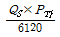
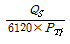
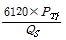
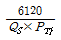
(정답률: 48%)
71. 자연환기방식에 의한 전체환기의 효율은 주로 무엇에 의해 결정되는 것인가?
- 대기압과 오염물질의 농도
- 풍압과 실내ㆍ외 온도 차이
- 작업자 수와 작업장 내부 시설의 위치
- 오염물질의 농도와 실내ㆍ외 습도 차이
(정답률: 69%)
72. 다음 중 집진장치의 선정시 반드시 고려해야 할 사항으로 볼 수 없는 것은 무엇인가?
- 총 에너지 요구량
- 요구되는 집진효율
- 오염물질의 회수효율
- 오염물질의 함지농도와 입경
(정답률: 64%)
73. 다음 중 국소배기장치 설치상의 기본 유의사항으로 잘못된 것은 무엇인가?
- 발산원의 상태에 맞는 형과 크기일 것
- 후드의 흡인성능을 만족시키기 위해 발산원의 최소 제어풍속을 만족시킬 것
- 작업자가 후드의 기류흡인 부위에 충분히 들어가서 작업할 수 있도록 할 것
- 분진이 관내에 축적되지 않도록 관내 풍속이 적정 범위 내에 있을 것
(정답률: 71%)
74. 도금공정에서 벽에 고정된 외부식 국소배기장치가 설치 되어 있다. 소유풍량이 10.5m3/min, 덕트의 직경이 10cm, 후드의 유입손실계수가 0.4일 때 후드의 유입손실(mmH2O)은 약 얼마인지 고르시오. (단, 덕트 내의 온도는 표준상태로 가정한다.)
- 12.15
- 14.18
- 16.27
- 18.25
(정답률: 36%)
75. 자유 공간에 떠 있는 직경 20cm인 원형개구 후드의 개구면으로부터 20cm 떨어진 곳의 입자를 흡인하려고 한다. 제어풍속을 0.8m/s로 할 때 덕트에서의 속도(m/s)는 약 얼마인가?
- 7
- 11
- 15
- 18
(정답률: 55%)
76. 공기정화장치의 전ㆍ후에서 정압감소가 발생하였다면 다음 중 그 발생 원인으로 가장 관계가 먼 것은 무엇인가?
- 송풍기의 능력 저하
- 송풍기 점검 뚜껑의 열림
- 송풍기와송풍관의 연결부위가 풀림
- 공기정화장치의 입구주관내에 분진 퇴적
(정답률: 51%)
77. 온도 55℃, 압력 710mmHg인 공기의 밀도보정계수는 약 얼마인지 고르시오.
- 0.747
- 0.837
- 0.974
- 0.995
(정답률: 58%)
78. 작업장내 열부하량이 15000kcal/h이며, 외기온도는 22℃, 작업장 내의 온도는 32℃이다. 이때 전체환기를 위한 필요환기량은 얼마인지 고르시오.
- 83m3/h
- 833m3/h
- 4500m3/h
- 5000m3/h
(정답률: 45%)
79. 작업장 실내의 체적은 1800m3이다. 환기량을 10m3/min라고 하면, 시간당 환기횟수는 약 얼마가 되겠는가?
- 5회
- 3회
- 1회
- 0.3회
(정답률: 38%)
80. 테이블에 플랜지가 붙은 1/4 원주형 슬롯 후드가 있다. 제어거리가 30cm, 제어속도가 1m/s일 때, 필요송풍량(m3/min)은 약 얼마가 되겠는가? (단, 슬롯의 폭은 5cm, 길이는 10cm이다.)
- 2.88
- 4.68
- 8.64
- 12.64
(정답률: 36%)